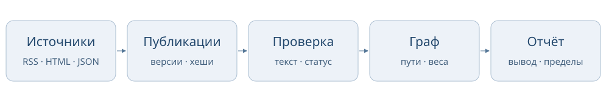

Кто станет следующей целью?
Пассивная CTI-платформа: открытые сообщения, доказательства и очередь проверки
Тестовое задание интенсива «Мыслить как хакер». Выполнена задача № 1: основная часть и программный прототип дополнительной части.
Автор: [имя и фамилия]
Версия проекта: 3.0.0. Методика: weighted-graph-v3. Отчёт подготовлен 25 октября 2026 года.
1. Результат и границы работы
Проект помогает аналитику выбрать, какие открытые сообщения и технические гипотезы следует проверить в первую очередь. Для каждой компании можно увидеть основания оценки, источники, проверенные связи, неизвестные сведения и следующий шаг. Результат — объяснимая очередь аналитической проверки.
Реализованы пассивный сбор RSS/HTML/JSON, сохранение публикаций и версий, первичное извлечение сущностей и связей, ручная проверка доказательств, граф Neo4j, веб-панель и запуск через Docker одной командой. Автоматическая обработка использует правила; ИИ не вызывается для вынесения текущих оценок.
Исследование ограничено открытыми источниками. Прямой сбор с закрытых площадок, покупка доступов, сканирование, эксплуатация уязвимостей и контакты с сотрудниками не проводились. Предсказательная точность и статистическая калибровка коэффициентов не измерены. Численные индексы не являются вероятностью атаки.
Основной воспроизводимый снимок содержит 374 публикации, 99 утверждений и 25 компаний на 24.10.2026, 14:46:40 UTC. Дополнительный кейс ИСП РАН/GitLab содержит отдельные 3 публикации, 2 связи и одну организацию. Он поставляется отдельным снимком; исходный корпус проверки извлечения сохранён.
2. Соответствие заданию
| Пункт задачи № 1 | Выполненная работа |
|---|
| Необходимые данные и источники | Определены роли публикаций об инцидентах, исследовательских сообщений, бюллетеней, сведений об использовании ПО и каталогов программ безопасности. |
| Полезность, обработка и ограничения | Для источников заданы способы загрузки, интервалы, допустимые хосты, ограничения и смысл дат. Проверка сообщения отделена от установления факта события. |
| Объединение данных | Канонические ID компаний и продуктов, алиасы, URL и хеши, доказательные утверждения и отдельные идентификаторы инцидентов. |
| Методика оценки | Два текущих индекса, правила качества и давности, ограничения применимости, отдельный исторический технический результат. |
| Формирование вывода | Карточки компаний объясняют решение, показывают неизвестность, контраргументы и следующее действие. |
| Дополнительная часть | Работает пассивный сбор и обработка; показана условная гипотеза проверки обновления и случаи обоснованного ограничения вывода. |
Задачи № 2 и № 3 не заявляются как отдельно выполненные. Частичное пересечение функций обработки публикаций с задачей № 3 не меняет объём этой сдачи.
3. Данные и источники
Регулярный сбор использует 9 включённых источников. RSS даёт новости и исследовательский контекст; публичные HTML-страницы — бюллетени, описания внедрения и новости; официальный JSON CISA KEV — справочник известной эксплуатации. Каталоги bug bounty дают контекст исследовательских программ, а не свидетельство атаки.
В интерфейсе показываются только включённые источники. Недоступные или архивные источники исключены из регулярного сбора; их старые публикации остаются в доказательствах. Ручные пересказы первоисточников имеют отдельные метки происхождения и не выдаются за автоматическое получение полной статьи.
Сбор ограничен разрешёнными хостами, интервалами и размером ответа. Учитываются robots.txt, Retry-After и ошибки отдельных источников. Ошибка загрузки не удаляет ранее сохранённые сведения. При отсутствии точной даты её значение остаётся неизвестным. Дата загрузки не заменяет дату публикации или события.
У источников разный охват и назначение. Несколько перепечаток одного сообщения не являются независимыми подтверждениями. Свежая новость об исправлении продукта не доказывает, что конкретная компания использует затронутую версию. Отсутствие публикации в нашем наборе не означает отсутствие инцидента.
4. Архитектура и обработка
Схема: открытые источники → публикации и версии → кандидаты в связи → проверка доказательств → граф и индексы → очередь аналитика.

SQLite — основное хранилище. В ней сохраняются тексты, URL, хеши, даты, результаты извлечения, проверки и история изменений. Neo4j — воспроизводимая проекция для графовых запросов. При её недоступности данные остаются в SQLite; синхронизация повторяется после восстановления.
Правила выделяют компании, продукты и CVE/BDU и предлагают кандидаты в связи. Простое соседство названий не устанавливает использование ПО или участие CVE в инциденте. Кандидаты требуют отдельной проверки. Сопоставление сущностей использует каталог и алиасы; разные организации не объединяются только из-за похожих названий.
Точные повторы обнаруживаются по URL и содержимому. Известные общие события связываются через идентификатор инцидента. Смысловая дедупликация произвольных разных текстов полностью не решена. Сообщения о восстановлении и последствиях старого инцидента не превращаются автоматически в новую атаку.
Подтверждение связи относится к конкретному фрагменту и хешу текста. Новое подтверждение требует уверенности, типа основания, имени проверяющего и обоснования. Изменение текста снимает прежнее подтверждение и исключает его вклад до повторной проверки. Прежние версии и журнал решений сохраняются.
5. Методика оценки
Модель weighted-graph-v3 использует экспертные коэффициенты из config/graph_weights.json. В каждом результате сохраняются версия модели и SHA-256 конфигурации. Веса не обучены на размеченных исходах. Общий принцип — показать силу и полноту оснований для проверки, сохраняя неизвестные значения.
5.1. Вес ребра
w = C × B × D
D = 2^(−t / H)
C — уверенность в конкретной связи: высокая 1; средняя 0,7; низкая 0,4. B — тип основания: сообщение пострадавшей компании 0,9; бюллетень разработчика 0,9; государственный бюллетень 0,9; исследовательский отчёт 0,85; опубликованное обвинение 0,65; заявление атакующего 0,3. Устаревшие подтверждения без полной разметки используют консервативные значения по умолчанию с видимым предупреждением. Новые подтверждения с пропущенными полями не принимаются.
Для адресных сигналов вместо B используется статус проверки: unresolved 0,4; corroborated 0,7; confirmed 1. Сначала проверяется сопоставление сообщения с компанией. Утверждение источника и установленный факт события сохраняются раздельно.
t — давность основания. H равен 90 дням для интереса и 180 дням для использования ПО. Для события выбирается завершение известного периода либо его начало. Для использования ПО — дата наблюдения; дата публикации как приближение явно помечается. Повторная загрузка или проверка не освежают старое основание. Будущие сведения и проверки не участвуют в более раннем расчёте.
5.2. Интерес атакующих
| Компонент | Максимум |
|---|
| Адресные сигналы о компании | 60 |
| История инцидентов | 20 |
| Активность в отрасли | 20 |
Внутри компонента учитывается самый сильный допустимый путь, затем вклады складываются. Один известный инцидент не заполняет два компонента; перепечатки не суммируются как независимые основания. Наличие только исторического инцидента не даёт компании автоматически высокий текущий приоритет.
5.3. Текущая техническая применимость
Нужны проверенные связи использования продукта и области бюллетеня. Подтверждённое попадание установленной версии в диапазон даёт множитель 1; неизвестная версия — 0,25; несовпадение исключает путь. Базовый технический множитель равен 0,6; отдельный справочный контекст эксплуатации может добавить до 0,4 × качество основания.
I_technical = 100 × min(w рёбер) × множитель версии × множитель контекста
Даже проверенная цепочка не устанавливает доступность конкретного обработчика, конфигурацию и отсутствие исправления. Неизвестные сведения остаются неизвестными. Бюллетень о продукте не является доказательством атаки на использующую его организацию.
5.4. Историческая эксплуатация
Отдельный результат требует четырёх подтверждённых связей: инцидент затронул компанию; в нём использовался продукт; эксплуатировалась CVE; бюллетень связывает эту CVE с этим продуктом. Совпадения CVE или названий недостаточно. Заявление атакующего, утверждение из обвинения и неполная разметка не устанавливают такой факт.
I_history = 100 × min(C × B четырёх рёбер)
Этот показатель описывает качество подтверждения исторической цепочки. Для него не применяется штраф неизвестной версии и затухание установленного факта. Он отделён от текущей технической применимости и не поднимает компанию в текущую очередь сам по себе. Исправленная текущая версия не стирает прошлую эксплуатацию; отзыв необходимой связи снимает результат.
6. Аналитические примеры
ИСП РАН / GitLab
Дополнительный кейс связывает сохранённое описание использования GitLab, отдельное наблюдение публичной страницы сервиса и бюллетень разработчика. Результат — условная задача проверить версию и обновление у владельца системы. Установленная версия, отсутствие патча, достижимость уязвимого обработчика и атака не установлены. Кейс показывает, как повысить приоритет проверки с явными ограничениями.
TrueConf / PHP
Кейс содержит цепочку от использования продукта к описанию обновления, CVE и сообщению об эксплуатации PHP. Сведения о закрытом контуре и неизвестной версии ограничивают вывод. Эксплуатация PHP в общем не переносится на TrueConf или конкретного клиента. Решение — проверить обновление внутри разрешённого контура.
Equifax 2017
Историческая карточка показывает оба типа расчёта. Основной текущий технический индекс учитывает давность использования и неизвестную версию. Отдельная подтверждённая историческая цепочка даёт 90/100 по качеству её оснований; это не 90-процентный риск сегодня.
Во вкладке «Пример» используется учебная реконструкция на 15.09.2017: интерес около 6,87/100 и историческое техническое подтверждение 90/100. Документы фактически собраны и проверены позднее; реконструкция не является прогнозом или результатом работы платформы в 2017 году. Реальные даты сбора и проверки сохранены в доказательствах.
Novabev Group / ВинЛаб
Сообщения об атаке, восстановлении и последствиях относятся к одному историческому инциденту. Две организации не означают две независимые атаки. При отсутствии подтверждённых технических данных CVE и установленное ПО не выдумываются, а технический результат остаётся неизвестным.
Полные записки, первоисточники и воспроизводимые расчёты находятся в docs/cases. Каждый вывод ограничен исследованным набором данных.
7. Проверка работы и качества
Автоматические тесты проверяют формулы, даты, дедупликацию, изменения текстов, ручные статусы, версии, границы применения и защиту от переноса чужого инцидента на компанию. Сквозной CLI-сценарий проверяет импорт, повторы, граф, отчёт и справочник ATT&CK. Эти проверки не доказывают истинность источников или прогнозную полезность.
Для версии 3.0.0 выполнена проверка распакованного архива в отдельных Docker-ресурсах: офлайн-воспроизведение, первый запуск, готовность трёх сервисов, пауза и продолжение, сохранение данных после пересоздания, обратная сверка Neo4j и остановка веб-панели. Прошли 339 тестов на хосте, 339 тестов в контейнере (два дополнительных теста Node пропущены в минимальном образе и выполнены на хосте), 8 браузерных проверок и 19 проверок чистого Docker-архива. Количества и результаты записаны в RELEASE_CHECKS.json и docs/analysis/release-3.0.0.
Отдельный пилот классификации на 30 текстах дал 21 совпадение с исходной разметкой. Разметка пилота подготовлена с участием ИИ, поэтому 70% нельзя представлять как независимую оценку. Для извлечения связей зафиксированы 30 текстов, ответы алгоритма и слепая форма проверки. Завершённая валидная человеческая разметка отсутствует; Precision, Recall и F1 не заявляются.
Чувствительность проверена в 45 сценариях на одном неизменном снимке. Варьируются по одному коэффициенту на ±20% и все коэффициенты совместно; фактические нормализации сохранены. Проверка показывает зависимость баллов от принятых настроек, но не обосновывает оптимальность весов и не даёт доверительных интервалов.
Для проверки прогнозной полезности нужны отдельная независимая разметка, критерии приоритета, заранее сохранённые временные снимки, горизонт наблюдения, исходы и сравнение с простым базовым методом. В этой работе такая проверка не проведена.
8. Запуск и демонстрация
Распаковать архив целиком. На Linux/macOS/WSL с Docker и Compose запустить из папки проекта:
./start-cti.sh
Команда собирает образ, создаёт локальный пароль при отсутствии настроек, сохраняет существующую базу, запускает Neo4j, сборщик и панель и ждёт готовности. Адрес панели: http://127.0.0.1:8766/. На Linux прежний настольный сборщик и панель этой же папки завершаются при переходе на Docker.
./start-cti.sh status
./start-cti.sh logs
./start-cti.sh stop
Остановка закрывает веб-панель; данные сохраняются. После запуска демонстрация занимает около пяти минут: открыть очередь, разобрать ИСП РАН/GitLab, проверить ограничения TrueConf/PHP, открыть вкладку «Пример», показать источники и раскрытые пути.
Для проверки без Docker и сети нужен Python 3.11+:
python3 scripts/review.py
Команда проверяет хеш снимка и создаёт отдельную data/review/review.sqlite3, отчёт и граф. Рабочая база и .env не используются. Первый запуск Docker требует получения образов; Python-проверка использует только стандартную библиотеку. Для воспроизведения расчётов не нужны токены внешних сервисов.
9. Ограничения и использование ИИ
Открытые источники неполны и зависимы; охват компаний неравномерен. Правила извлечения могут пропускать связи и предлагать неверные кандидаты. Полные исходные страницы сохранены не для всех ручных пересказов. Известная эксплуатация не раскрывает нынешнюю конфигурацию компании. Отсутствие сообщения не доказывает отсутствие события.
Идея и требования к реализации заданы автором проекта. ИИ помогал с архитектурой, кодом, разбором открытых материалов и подготовкой документации. Проверка реализации включает тесты, сквозные сценарии, браузерную проверку и обратную сверку графа. Источники и ручные пересказы имеют явные метки происхождения; независимая экспертиза не заявляется.
Работа представляет собой исследовательский прототип поддержки аналитика. Его готовый результат — воспроизводимая обработка публичных сведений и объяснимые задачи проверки. Следующее развитие должно опираться на измерение качества извлечения и полезности ранжирования.
10. Навигация по комплекту
| Материал | Расположение |
|---|
| Стартовая страница | START_HERE.html |
| Код и конфигурация | app, config, scripts |
| Запуск Docker и управление | start-cti.sh, docs/docker.md |
| Текущая методика | docs/graph_scoring.md |
| Примеры с доказательствами | docs/cases |
| Фиксированный отчёт и граф | data/processed/real |
| Пилот классификации и статус извлечения | data/processed/evaluation, data/processed/extraction_evaluation |
| Слепая форма и зафиксированные ответы | evaluation |
| Результаты приёмки | RELEASE_CHECKS.json, docs/analysis/release-3.0.0 |
| Хеши файлов | PACKAGE_MANIFEST.json |
Дополнительные первоисточники исторических кейсов: сообщение Equifax, Apache S2-045, официальное сообщение Novabev Group. Полные реестры с ограничениями и хешами приведены в evidence.json соответствующих кейсов.